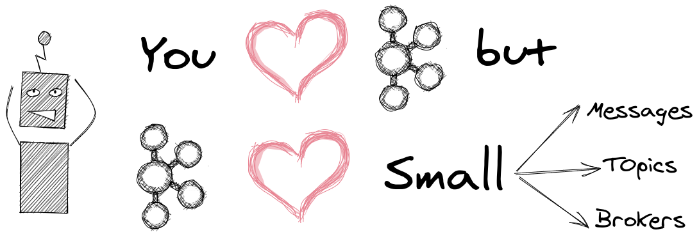

Three simple ideas to make your life easier with Kafka
30 April 2021
Apache Kafka was open-sourced by LinkedIn in early 2011. Despite all the initial limitations, it was a huge success and it became the de-facto standard for streaming data. The performance, possibility to replay events and multiple consumers independently were some of the features which disrupted the streaming arena.
But Kafka has been also known for its difficult learning curve and difficulties with the operation. In my experience, both things are improved a lot in the last few years but the original gotchas remain:
- Kafka has been created from the very beginning for performance, so it's by default more balanced to improve latency/throughput than reliability.
- One of the key ideas behind Kafka it's to put part of the responsibility on the producer and the consumer. This simple idea allows Kafka to have its legendary performance. But it makes Kafka more complex for the clients: you need to make some decisions and they will have a huge impact on the broker and the whole pipeline.
- Kafka can be used for many different use cases which, in the end, means it needs to be tuned for each one... and there are a lot of things to tune. Most of the decisions and knowledge required to use Kafka are based on experience and spread over the Internet in blog posts and talks. Which it's worse, one pattern can be perfectly valid for a use case and total disaster for others.
In this article, we are going to cover three simple things which can help a lot to make the use of Kafka much more smooth.

Small messages
Kafka doesn't like big messages. By default, it's limited to 1Mb. You can modify message.max.bytes in the broker to allow bigger messages but it isn't usually a good idea. It requires fine tuning in the clients and the brokers and it's going to make the whole cluster less performant. Not only that, you can't change this for a particular topic but for the whole cluster which makes capacity planning much harder.
The ideal size for a message in Kafka is 1Kb. I had quite performant pipelines with messages much smaller than that. It doesn't matter too much when they are small. The Kafka producer is going to put them together and send them in a batch. The broker will store them as a batch and the consumer will read them as a batch. You can configure batch size independently of message size (trading latency for throughput) so small messages are ok, big messages aren't.
Another problem with big messages is that if you want to migrate to a managed service at some point, they may not support them. It's the case of Confluent Cloud(6 Mb), Azure EventHub (1 Mb) or Google PubSub(10 Mb).
I had to announce this bad news many times and deal with the developer's sad faces. Luckily, after some discussion, we always found a way to solve this without modifying message.max.bytes. Let's review three different options:
-
Split the message into several messages: this is possible almost always even if it isn't easy to see it at first. Look at the schema and see how you can split it into messages which have sense individually. It's perfectly ok to have information duplicated between them, typically metadata. As we mentioned before, Kafka is going to send them in batches, and almost always, compressed (Hint: don't use E2E compression with Kafka is almost always a bad idea) so duplicates don't have a big impact on the overall size of the batch.
-
Move messages to different storage: when messages are too big and there is no way to split them (images, PDFs, etc.) is usually better to publish them in another place as S3, and send the URI of the stored file in the Kafka message. There are even some libraries that allow doing this in an automatic way: the serializer writes to S3 when the message is too big, the deserializer downloads the payload from S3 when it receives a URI.
-
Use something different than Kafka: almost all messaging brokers have problems with big messages but Kafka has a lower limit. Apache Pulsar for example maximum message by default is 10 Mb and it has a feature to split it into smaller messages and re-join it in the producer when needed. This isn't a solution for a specific use case but, if you know you are going to deal with a lot of big messages, it may be an important factor to choose one technology or another.
If anything of that works, then go and increase message.max.bytes. It isn't the end of the world but be aware some fine tuning which requires Kafka expertise may be needed.
Small topics
Another quite problematic thing with Kafka is big topics. This tends to happen organically. Instead of creating a new topic for a different type of information, you use one existent which has the same consumers. There are several problems with this approach:
- Consumers interested in some part of the data have to read everything and filter to select the data they need. That's very inefficient. There are some tricks to avoid the deserialization of the non-required messages but the consumer has to read them and consume network bandwidth anyway.
- A big topic usually means a lot of partitions. It's how Kafka works: a topic is divided into partitions over different brokers. If you need more throughput, you increase the number. That's great but there are some caveats: you can't decrease the number of partitions. Also, when adding partitions, consumers are affected and some lag will happen. Also, there is some coordination Kafka has to do which is proportional to the number of partitions.
- Big topics mean big clusters. We'll cover big clusters later but it's very usual to split the load between different clusters. If you have small topics, it's easy to move topics to a different cluster. If not, it may be impossible.
- There are several operations in Kafka that require creating a new version of the topic: typically decrease the number of partitions or introduce breaking changes in the message schema. In that case, you will need a V2 topic. This is very usual and automation is key to make the migration process smooth. When you have small topics, that process is much simpler because there are fewer consumers impacted.
The list is much bigger but it's probably enough to illustrate the point. There are also some problems with small topics, for example, if a consumer needs to read all the messages. Kafka has evolved to solve it: it's quite easy to subscribe to a list of topics. You can also specify a Regex pattern so topics will be assigned dynamically even if they are created later.
Small clusters
Big clusters are hard to maintain even for the companies with the most Kafka experience. You can see in this thread many of the most important companies recommending small clusters and Netflix wrote an article about it (Kafka deployment strategy section).
Another problem for big clusters is configurations that are done at cluster-level ( message.max.bytes, auto.create.topics.enable (for CDC use cases), compaction/retention threads, etc.) which can be use-case dependent and it's interesting to be able to optimize them for particular loads.
Another good point for small clusters is to make easier upgrades which it's something very important in Kafka. The community is super active and Kafka has evolved a lot in the last years. Being able to run the last stable version of Kafka is almost mandatory for resilience and saving cost in the cloud. A great example of this is Confluent Cloud which only supports a shortlist of the last versions. If you use it, you will need to upgrade to newer versions at some point.
Small clusters in the cloud are particularly handy. I know a company (gaming) with very short-time huge peaks of traffic. That's problematic for Kafka because you can't easily add/decrease the number of partitions. So for those situations, we automatically created a new cluster with much more resources and dynamically migrated all the traffic to the new one. Once the peak has passed, we repeat the same operation in the inverse order. This isn't usual but it gives a good view of what you can do in the cloud when your clusters are split, they are easy to manage and you can control producers and consumers.
One of the problems with small clusters is when you want to join data from different topics. It can be quite complex when topics are in different clusters. Because of that, it's usually appropriated to split the cluster by business domain or type/requirements of the load so you don't need to replicate (too much) data between clusters.
Summary
This is a list of only three things (but there are much more!) that may help to use Kafka properly and avoid the need to look for alternatives. They are based on my previous experience. They worked well for me until now but don't use them blindly. It's perfectly fine to break any of those rules, the point is to do it by being aware of the challenges and plan for the consequences.
Did I miss something? You can comment on GitHub or just drop me a note on BlueSky!
Update: this article made it to DZone.